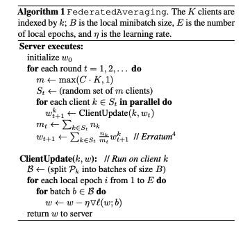
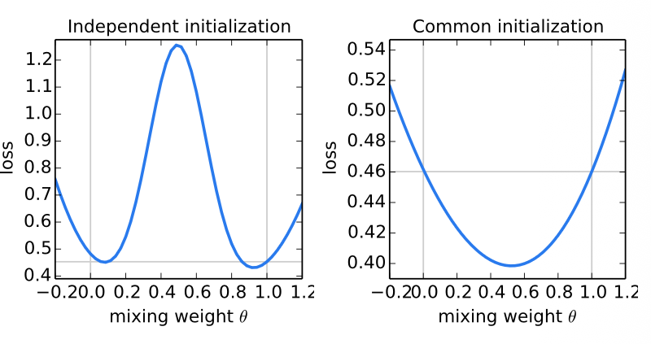
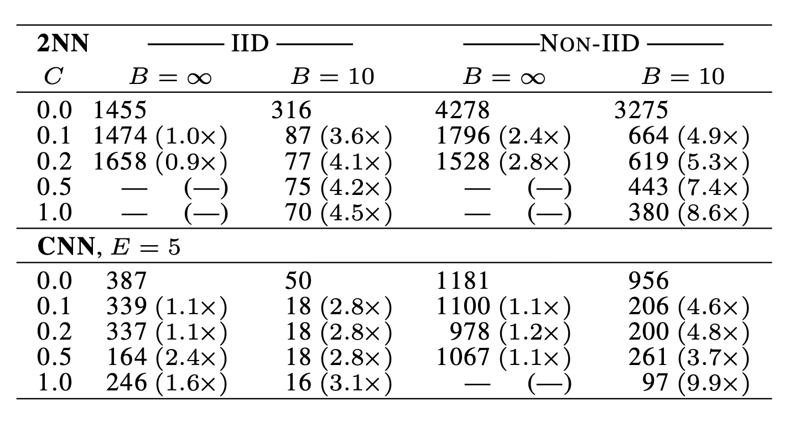
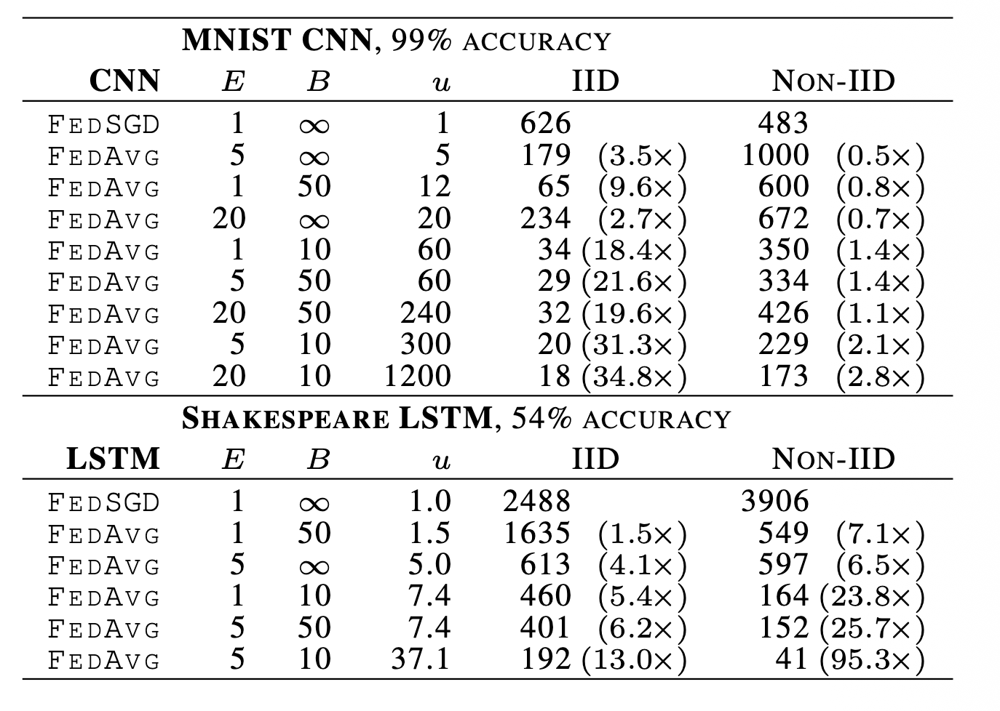
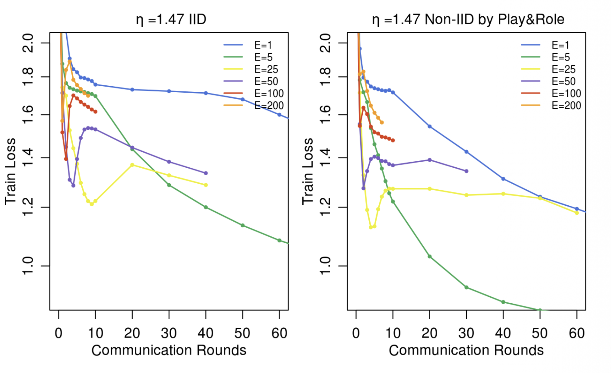

1. Abstract
모바일의 발전으로 방대한 양의 데이터가 생겼지만, 그 데이터들은 개인 정보에 민감하거나 데이터 센터로 전송하기에 제약사항들이 있다.
따라서 로걸 디바이스에 학습 데이터들을 분산해 저장하고 학습을 진행하여, 최종적으로는 서버의 글로벌 모델을 학습시키는 “Federated Learning”을 제안한다.
- nonIID 데이터에서도 모델이 잘 학습된다.
- 커뮤니케이션 비용이 크게 감소한다 10~100배
2. Introduction
스마트폰의 발달로 전례없는 양의 데이터가 발생하며, 이는 민감한 개인정보를 포함한다.
- 이 데이터의 학습은 모델을 더 발전시킬 수는 있지만, 중앙 집중식 저장소에 보관하는데는 위험과 책임을 져야한다는 부담이 있다.
Federated Learning 은 이문제를 해결할 수 있다. 학습이 중앙 서버에 의해 클라이언트들이 조정되며 클라이언트들의 데이터는 서버로 절대 업로드 되지 않는다.
대신, 클라이언트들은 매번 서버의 전역 모델을 업데이트 한다. - 모델학습과 개인정보를 디커플링 한다.
- 공격 표면이 클라우드는 사라지고 클라이언트의 기기만 존재하게 되므로 보안 위험을 크게 줄인다.
구체적으로는 클라이언트의 SGD 와 서버상의 평균을 결합한 FedAvg 알고리즘을을 제안한다. - 비독립동일분포(non-IID)인 데이터 분포에서도 견고하게 작동함
- 통신 횟수를 수십 배 이상 단축할 수 있음을 확인
2.1 Federated Learning
연합학습을 적용하기에 최적화된 문제는 다음 세 가지 조건을 만족해야 합니다.
- 실제 모바일 데이터의 우위: 데이터센터의 프록시 데이터(위키피디아, Flickr 등)와 달리 실제 모바일 환경(채팅 언어, 직접 촬영한 사진 등) 데이터 분포가 현저히 달라 실기기 데이터 학습의 이점이 명확함.
- 프라이버시 민감도 및 대용량: 비밀번호, 메시지, 개인 사진 등 민감한 정보이거나 모델 크기 대비 데이터가 방대하여 집중 수집 원칙(Focused collection)상 중앙 서버 전송이 부적합함.
- 자연스러운 라벨 생성: 사용자 인터랙션을 통해 정답 라벨이 자동으로 확보됨 (언어 모델의 다음 단어 입력, 사진 앱에서의 저장·삭제·공유 행위).
대표 적용 모델 (당시 SOTA 신경망):
- 이미지 분류: 합성곱 신경망(CNN)
- 언어 모델링: 순환 신경망(LSTM)
2.2 프라이버시 이점
- 익명화된 데이터셋이라도 타 데이터와 결합(Join) 시 식별 위험이 존재하지만, 연합학습은 학습에 필요한 최소한의 모델 업데이트(가중치/그래디언트)만 일시적(Ephemeral)으로 전송함.
- 데이터 처리 부등식(Data Processing Inequality): 가중치 업데이트에 포함된 정보량은 원본 데이터보다 결코 많을 수 없음.
- 집계 알고리즘에는 클라이언트의 식별 메타데이터가 필요하지 않아 Mixnet(Tor)이나 신뢰할 수 있는 제3자를 통해 안전하게 전송 가능함
2.3 연합 최적화(Federated Optimization)
기존 데이터센터의 분산 최적화와 구별되는 연합 최적화만의 고유한 제약 조건입니다.
- Non-IID (비독립동일분포): 특정 사용자의 로컬 데이터는 전체 모집단 분포를 대변하지 못함
사용자에 따라 편향된 데이터가 존재 - Unbalanced (불균형): 사용자마다 앱/기기 사용량이 달라 로컬 데이터 수 편차가 매우 큼.
- Massively Distributed (대규모 분산): 참여 클라이언트 수()가 클라이언트당 보유한 평균 데이터 수보다 훨씬 많음.
- Limited Communication (제한된 통신 환경): 모바일 기기는 오프라인 상태가 잦고, 업로드 대역폭이 1 MB/s 이하로 극도로 제한됨. 클라이언트가 응답하지 않을 수 있다
클라이언트 가용성, 데이터 불균형, 비독립항등분포(non-IID) 데이터라는 핵심 문제를 다룰 수 있는 통제된 환경을 사용
- 핵심 트레이드오프:
- 데이터센터 최적화는 연산 비용이 지배적이지만, 연합학습은 통신 비용이 절대적인 병목(Bottleneck)임.
- 최신 스마트폰 프로세서는 충분히 빠르므로, 기기 내 연산량(Local Computation)을 늘려 전체 통신 라운드(Communication Rounds) 수를 줄이는 것이 본 논문의 핵심 목표임.
- 병렬 클라이언트 수 확대와 로컬 연산량 증대 중, 각 클라이언트가 통신 라운드 사이에 로컬 스텝(에포크)을 더 많이 수행하도록 하는 것이 통신 비용 절감의 핵심 동인임.
3. FederatedAveraging Algorithm

- K개의 클라이언트가 고정된 로컬 데이터셋을 보유한 채 존재한다. 각 라운드가 시작될 때 무작위로 선택된 C 비율의 클라이언트에게 서버가 현재의 전역 알고리즘 상태(ex. 전역 모델 업데이트 가능)를 전송한다.
뒤의 실험결과에서 나오겠지만, k 개의 클라이언트를 선택한 이유는 10% 이상 선택해도 효율이 떨어진다.
또한, 네트워크 장애 및 클라이언트의 오프라인 상태에서도 잘 동작함을 보여주기 위한걸로 추정
-
선택된 각 클라이언트는 전역 상태와 로컬 데이터셋을 기반으로 로컬 연산을 수행한 뒤 서버로 업데이트를 전송
-
서버가 이 업데이트를 전역 상태에 적용
- 같은 시드 사용 = epoch !=1 , batch != ∞ 인 FedAvg
- FedAvg 에서 epoch=1 batch=∞ 이면 FedSGD = FegAvg
모든 클라이언트가 서버가 배포한 동일한 전역 가중치()에서 출발해야하는 이유는 Figure 1이 증명한다.
FIGURE 1

MNIST 학습 세트중 다른 학습세트로 학습된 모델 w, w1 파라미터가 존재한다
- 각 클라이언트가 다른 학습 데이터를 가지고 클라이언트에서 w 를 구한것과 동일하다.
- θ 는 w, w1 중 선택 비율을 의미한다
- 각 모델의 가중치를 뒤섞은후 데이터 예측에대한 손실 함수를 나타냅니다.
왼쪽
- 각 클라이언트가 서로 다른 무작위 초기 가중치()에서 학습을 시작한 뒤 나중에 가중치를 섞은 경우입니다.
- 의미: 각자 다른 난수 시드로 출발하면 각 모델 자체는 학습이 잘 되었더라도, 중간 지점(, 가중치 평균)에서 오차 장벽(Loss Barrier)이 심하게 치솟아 모델이 파괴됩니다.
오른쪽
- 두 클라이언트가 서버로부터 완전히 동일한 초기 가중치()를 받아서 각자 로컬 학습(여러 스텝)을 돌린 뒤 가중치를 섞은 경우입니다.
- 의미: “비록 비볼록(Non-convex) 신경망이고 서로 다른 데이터로 여러 스텝을 학습했더라도, 동일한 초기 모델에서 출발했다면 가중치를 평균 내도 안전하며 오히려 전체 데이터에 대한 손실이 떨어진다.
4 . Experimental Results
| 데이터셋 | 구분 | 분할 기준 | 클라이언트 수 | 클라이언트별 데이터 특성 | 현실 반영/목적 |
|---|---|---|---|---|---|
| MNIST (이미지 분류) | IID | 전체 이미지 셔플 후 균등 분할 | 100명 | 인당 600장 (0~9번 숫자 라벨 골고루 보유) | 알고리즘 기본 수렴 성능 검증 (이상적 환경) |
| Non-IID | 라벨 정렬 후 300장짜리 샤드 2개씩 배분 | 100명 | 인당 600장 (단 2개의 숫자 라벨만 편향 보유) | 인위적 극단 편향(Pathological) 환경에서의 강건성 검증 | |
| Shakespeare (다음 글자 예측) | IID | 전체 대사 라인 셔플 후 균등 분할 | 1,146명 | 균등한 데이터 양 (전체 어휘/문체 분포 동일 공유) | Non-IID 대비 성능 저하 폭 측정을 위한 대조군 |
| Non-IID | 희곡 내 등장인물(Role) 단위 분할 | 1,146명 | 극단적 불균형 데이터 양 (인물별 어휘·어투 편향) | 모바일 키보드(Gboard) 등 현실 자연 데이터(Natural) 모사 |
1. Shakespeare (Non-IID 버전 - 현실 반영)
- 분할 기준: 실제 희곡의 등장인물(Speaking Role) 단위.
- 각 클라이언트가 특정 인물의 대사만 가집니다.
- 앞서 다룬 대로 데이터 양도 제각각(Unbalanced)이고, 인물마다 어휘와 어투가 완전히 다릅니다(Non-IID).
2. Shakespeare (IID 버전 - 대조군)
- 분할 기준: 셰익스피어 희곡 전체 텍스트 라인을 무작위로 골고루 섞은(Shuffle) 뒤 균등하게 분할.
- 텍스트 라인들을 완전히 무작위로 섞어서 1,146명의 가상 클라이언트에게 골고루 나누어 줍니다
- 결과적으로 모든 클라이언트가 전체 셰익스피어 어휘와 문장 스타일을 동일한 통계적 확률 분포로 나눠 갖게 됩니다(IID).
MNIST 데이터 분할 방식 (총 60,000개 훈련 데이터, 100개 클라이언트)
- IID 분할:
- 전체 60,000개의 손글씨 이미지를 무작위로 셔플(Shuffle)한 뒤, 100명의 클라이언트에게 균등하게 600장씩 분배합니다.
- 모든 클라이언트가 0부터 9까지의 모든 숫자 라벨을 거의 동일한 비율로 고르게 보유합니다.
- Non-IID 분할 (인위적 극단 조건 - Pathological Non-IID):
- 전체 데이터를 숫자 라벨(0~9) 순서대로 정렬합니다.
- 정렬된 데이터를 각각 300장 크기의 200개 조각(Shard)으로 나눕니다 (각 조각은 단 1가지 숫자 라벨로만 구성됨).
- 100명의 클라이언트에게 이 조각을 무작위로 2개씩만 배분합니다.
- 결과: 각 클라이언트는 단 2개의 숫자 라벨(총 600장)만 보유합니다 (예: 어떤 기기는 오직 숫자 1과 7만 가짐).
Increasing parallelism
table1

정화도를 cnn 99, 2nn 97% 까지 학습 시키는데 필요한 통신 라운드 수 를 의미한다.
- epoch=1 batch사이즈가 너무 크고 클라이언트를 전체 참여한경우 시간내에 97% 정확도에 미치지 못했다 (FedSGD)
- 즉, C 증가만으로 학습을 위한 통신효율을 개선할 수 없다
- 통신량은 로컬에서 여러번 SGD를 수행하는 FedAvg 에서 급감 했다
- 마지막으로, FedAvg 의 C 는 10% 로 샘플링해도 최적의 가까운 속도를 얻을 수 있다.
- 앞으로 실험에서 C는 10%를 사용
Increasing computation per client

C는 10%로 고정한 후에 클라이언트의 로컬 연산 량을 각 라운드에서 증가 시켰다.
-
라운드당 로컬 SGD 업데이트 횟 수를 늘리면 통신 비용이 획기적으로 감소할 수 있음을 보여주며
-
각 기기가 서로 다른 2개 숫자 라벨만 가진 극단적인 데이터 편향 환경에서도 2.8배 ~ 3.7배의 유의미한 라운드 절감(속도 향상)을 달성함.
-
완전히 다른 데이터로 학습된 파라미터들을 단순 평균 냈음에도 모델이 발산(Divergence)하지 않고 오히려 성능 이점을 얻었다는 점은, FedAvg(가중치 평균화) 접근법이 데이터 불균형 환경에서도 매우 견고하게 작동함을 보여주는 강력한 증거임.
-
우리는 FedAvg가 통신 비용을 절감 할 뿐만 아니라, 드롭아웃(dropout) 과 유사한 정규화 효과를 제공한다고 추측한다
첨부 자료가 준비되지 않았습니다. -
그림 2: C= 0.1 및 최적화된 ⌘를 사용한 MNIST CNN(IID 및 병리적 non-IID)과 Shakespeare LSTM(IID 및 Play&Role 기준)의 통신 라운드 대비 테스트 세트 정확도. 회색 선은 표 2에 사용된 목표 정확도를 나타낸다. 2NN에 대한 그래프는 부록 A의 그림 7에 제시되어 있다
Can we over-optimize on the client datasets

로컬 에폭()을 무작정 늘려 클라이언트 데이터에 과도하게 최적화()하면 글로벌 최적점에 도달할 것이라는 직관과 달리,
셰익스피어 LSTM처럼 편향(Non-IID)이 심한 환경에서는 각 기기의 가중치가 서로 다른 방향으로 지나치게 멀어져 평균화 시 성능이 정체(Plateau)되거나 발산(Divergence)하는 현상이 발생하므로,
학습 후반부에는 학습률을 줄이듯 로컬 에폭()을 줄이거나 배치 크기()를 키워 로컬 연산량을 감쇠(Decay)시키는 전략이 필요하지만,
MNIST CNN처럼 구조가 단순한 태스크에서는 큰 값에서도 성능 저하 없이 강건하게 수렴하는 차이를 보인다.
CIFAR-10 실험 (CIFAR experiments)
- 데이터셋 및 환경 구성
- CIFAR-10(10개 클래스, 32×32 RGB, 학습용 50,000장 / 테스트용 10,000장)을 사용.
- 데이터 분할: 총 100명의 클라이언트에게 균등하게 IID(독립동일분포) 형태로 분할(클라이언트당 학습 데이터 500장, 테스트 데이터 100장).
- 모델: 약 (100만)개의 파라미터를 가진 표준 CNN(2 Conv + 2 FC + Linear).
- 전처리: 24×24 크롭, 좌우 반전, 명암/밝기 조절 및 화이트닝 적용.
- 실험 결과 및 성능 비교 (Table 3 기준)
- 통신 라운드 대폭 감소:
- 목표 정확도 80% 달성 시: baseline SGD 18,000회 vs FedSGD 3,750회(4.8배 개선) vs FedAvg 280회(64.3배 개선)
- 목표 정확도 85% 달성 시: baseline SGD 99,000회 vs FedSGD 달성 실패 vs FedAvg 2,000회(49.5배 개선)
- 클라이언트당 로컬 업데이트(Epoch , 미니배치 )를 수행하는 FedAvg가 통신 횟수 측면에서 압도적인 가속 효과를 입증함.
- 클라이언트 참여 비율 (라운드당 1개 클라이언트)일 때는 정확도 진동이 심하지만, 여러 클라이언트의 평균을 취하면 안정화됨.
- 통신 라운드 대폭 감소:
2. 대규모 언어 모델 실험 (Large-scale LSTM experiments)
- 데이터셋 및 환경 구성
- 대규모 소셜 네트워크의 공개 게시물 1,000만 개를 작성자별로 그룹화하여 50만 명 이상의 클라이언트로 구성 (실제 모바일 텍스트 환경 모사).
- 클라이언트당 최대 5,000단어로 제한, 10,000단어 어휘집 기반의 다음 단어 예측(Next-word prediction) 태스크.
- 모델: 256 노드 LSTM, 임베딩 크기 192 (총 약 495만 파라미터).
- 실험 결과
- 라운드당 200명의 클라이언트 참여, , 설정.
- 목표 정확도(10.5%) 도달 기준:
- FedSGD: 820 라운드 필요 ()
- FedAvg: 단 35 라운드만에 도달 (, FedSGD 대비 23배 빠른 통신 효율)
- 설정보다 설정이 이 태스크에서는 약간 더 나은 성능을 보임.
3. 결론 및 향후 연구 (Conclusions and Future Work)
- 결론: FedAvg는 MLP, 2종류의 CNN, 문자/단어 단위 LSTM 등 다양한 구조에서 매우 적은 통신 라운드만으로 고품질 모델을 학습시킬 수 있어 연합학습의 실용성을 증명함.
- 향후 연구 방향: 연합학습의 프라이버시 보장을 강화하기 위해 차분 프라이버시(Differential Privacy), 보안 다자간 연산(SMPC, Secure MPC) 및 이들의 결합 프로토콜 연구가 유망하며, 이는 FedAvg와 같은 동기식(Synchronous) 알고리즘에 자연스럽게 적용 가능함.